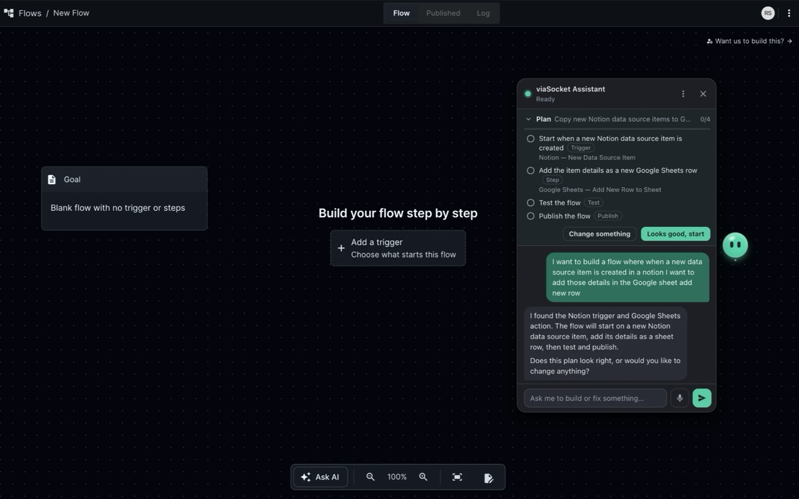
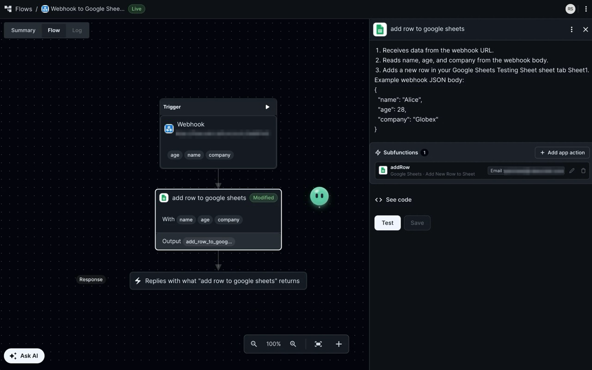
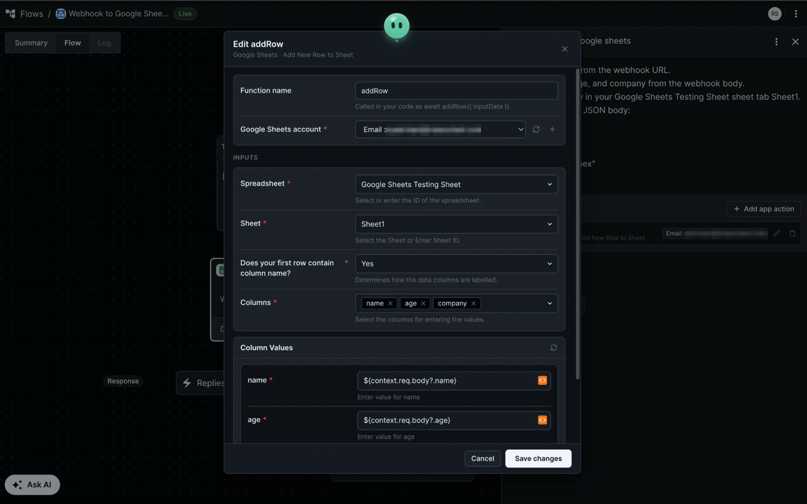
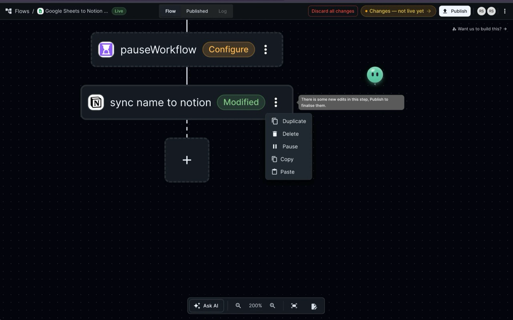

Build viaSocket flows
at the speed of thought.
Meet SOCKET — the on-canvas AI assistant that plans, configures, tests, and refines complex automations through hands-free voice and interactive conversation.

Supercharge Your Automation Workflow
Designed for Builders, Developers & Teams
No more clicking through dozens of nested modals. Just tell SOCKET what you want to connect.
Plans before it builds
Describe your automation in plain language. SOCKET breaks down the goal into an actionable checklist (trigger, actions, test dry-run, publishing) and waits for your confirmation before changing your flow.
- Transparent checklist showing every step and variable
- Prevents unintended overwrites or broken states
- Say "Looks good, start" to execute in seconds
Native Subfunctions in JS Steps
Combine the speed of low-code connectors with custom JavaScript. SOCKET inserts app actions straight into your JS code, automatically wiring dropdown selections and variable mappings.
- Full form builder inside JavaScript code blocks
- Keeps UI inputs and code variables synchronized
- Instant "Beautify" formatter for clean, formatted syntax

Tests as it goes with real data
SOCKET inspects real responses from previous steps, mapping accurate payload keys instead of guesswork. Dangerous steps (sending emails, modifying records) always ask permission first.
- Context-aware variable suggestions from previous executions
- Interactive run log inspection and troubleshooting
- Explains error stacks in plain conversational language

Copy, Paste, Export & Import
Move whole configurations effortlessly. Copy steps across workflows, clone complex conditionals, or export entire flows to clean JSON files to import anywhere.
- Canvas context menu for fast duplication
- Export/Import flows between accounts or environments
- Works identically in Developer Hub plugs

Hands-Free Voice Input
Hold Alt + Shift + V or simply say "Hey Socket". High-accuracy on-device speech-to-text ensures zero latency without sending your audio to external servers.
Sees What You See
SOCKET reads your open canvas, selected step, and recent execution errors, so you never have to re-explain context or paste messy JSON logs into chat.
Bring Your Own AI
Connect your preferred model using your own API key: OpenAI (GPT-4o), Anthropic (Claude 3.5 Sonnet), Google (Gemini 1.5 Pro), Groq, OpenRouter, or local models via Ollama.
Embed Anywhere Support
Using viaSocket embedded inside your SaaS or client portal? SOCKET automatically detects embed iframes across any host domain and mounts seamlessly.
Developer Hub Ready
Build custom plugs, triggers, authentication handshakes, and API components in Developer Hub with SOCKET's guided code generation.
Privacy By Design
Zero telemetry, no trackers, and no third-party databases. Sensitive API keys and workflow credentials never leave your browser profile.
Zero Learning Curve
How It Works in 3 Steps
Install the Extension
Add viaSocket Assistant to Chrome. Open any flow on flow.viasocket.com or any embed portal. SOCKET the mascot appears right on your canvas.
Say or Type Your Intent
Click SOCKET or hit your shortcut. E.g., "When an order is created on Shopify, check stock in Airtable, then send a Slack alert if inventory is low."
Review & Watch It Build
Review the generated plan and variables. Say "Looks good" and watch SOCKET add the steps, connect the APIs, format code, and test the flow.
Got Questions?
Frequently Asked Questions
Is viaSocket Assistant completely free?
Yes! The extension is 100% free and open-source under the AGPL-3.0 license. You only need your own API key for your chosen AI provider (such as OpenAI, Anthropic, Gemini, Groq, or free local models via Ollama).
Does it work on custom viaSocket embeds?
Yes. Starting in version 0.5.0, viaSocket Assistant natively runs inside embedfrontend.viasocket.com iframes across any host domain (like client portals or SaaS dashboards) with full voice and chat capabilities.
Which AI models and providers are supported?
You can configure OpenAI (GPT-4o, GPT-4o-mini), Anthropic (Claude 3.5 Sonnet), Google (Gemini 1.5 Pro/Flash), Groq (Llama 3.3), OpenRouter, or any self-hosted OpenAI-compatible endpoint like Ollama or vLLM.
How does speech recognition work?
By default, speech recognition runs client-side using an ONNX-optimized Whisper model inside an offscreen WebAssembly worker. Audio never leaves your device. You can also toggle browser-native speech recognition in the settings.
Can SOCKET delete or break my existing workflows?
No. SOCKET presents a transparent plan before making any modifications and asks for your confirmation. Dangerous actions (deleting steps, publishing to production, sending real webhooks) require explicit approval.
Ready to build workflows in seconds?
Install viaSocket Assistant today and start automating with voice and AI.